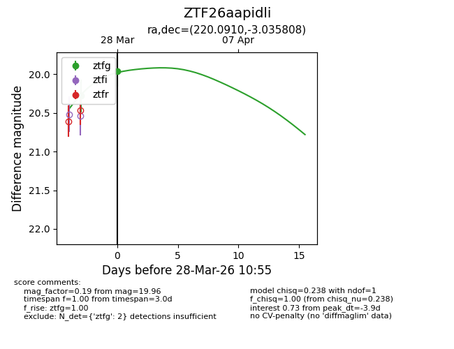
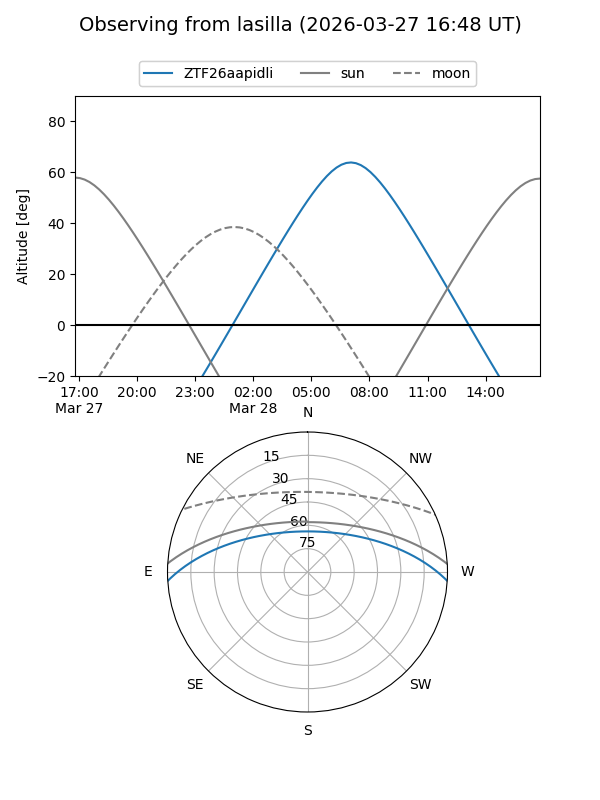
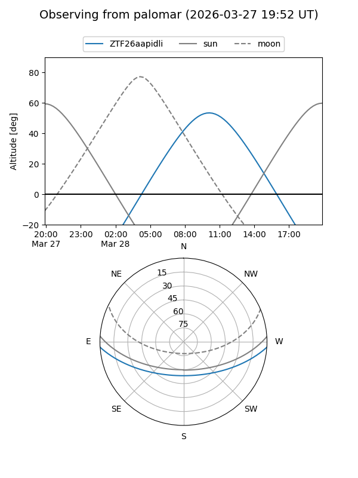
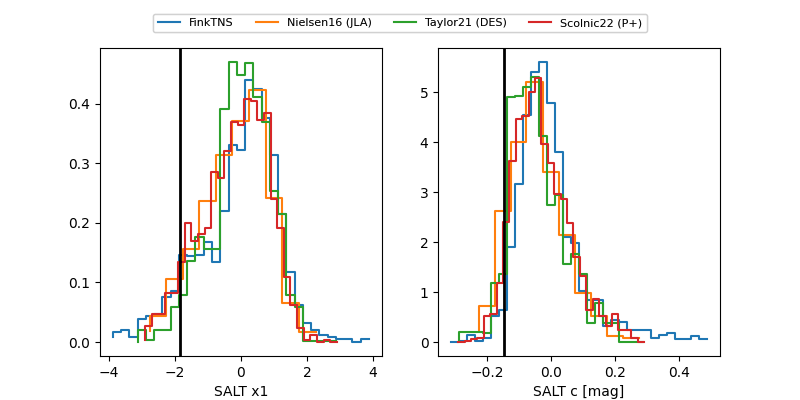

ZTF26aapidli
Target ZTF26aapidli at 2026-03-28 10:58
Aliases and brokers:
FINK: link
Lasair: link
ALeRCE: link
alt names
ZTF26aapidli (ztf,fink_ztf)
Coordinates:
equatorial (ra, dec) = 220.0910,-3.03581
equatorial (HMS+DMS) = 14:40:21.85,-03:02:08.91
galactic (l, b) = (348.2431,+50.00372)
Flags:
Photometry:
last ztfg=19.96
2 ztfg detections
Lightcurve

Visibility


Additional plots
